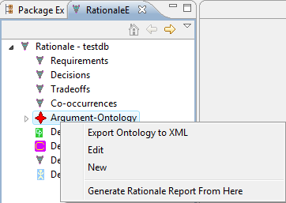

SEURAT supports modification of the Argument-Ontology (see Entering New Rationale -> Ontology Entries) and use of a modified Argument-Ontology when creating new databases. This is handled by storing the ontology externally in an XML file.
To modify the Argument-Ontology, just make the necessary changes in the Rationale Explorer. You can add and delete entries or change their names, descriptions, and importance. When you are ready to save the changes, right-click on the root node of the ontology and click on "Export Ontology to XML".

SEURAT will open a file browser allowing you to choose where you want the ontology to be exported. You can export the ontology anywhere, but it defaults to the file path that SEURAT loads its argument ontology from when creating a new database. If you want to use the changes you made in new databases, you should overwrite this file. Later, if you decide you want to go back to the default ontology, you can always switch to the SEURAT_Base database, export the argument-ontology from it, and overwrite the existing ontology again.